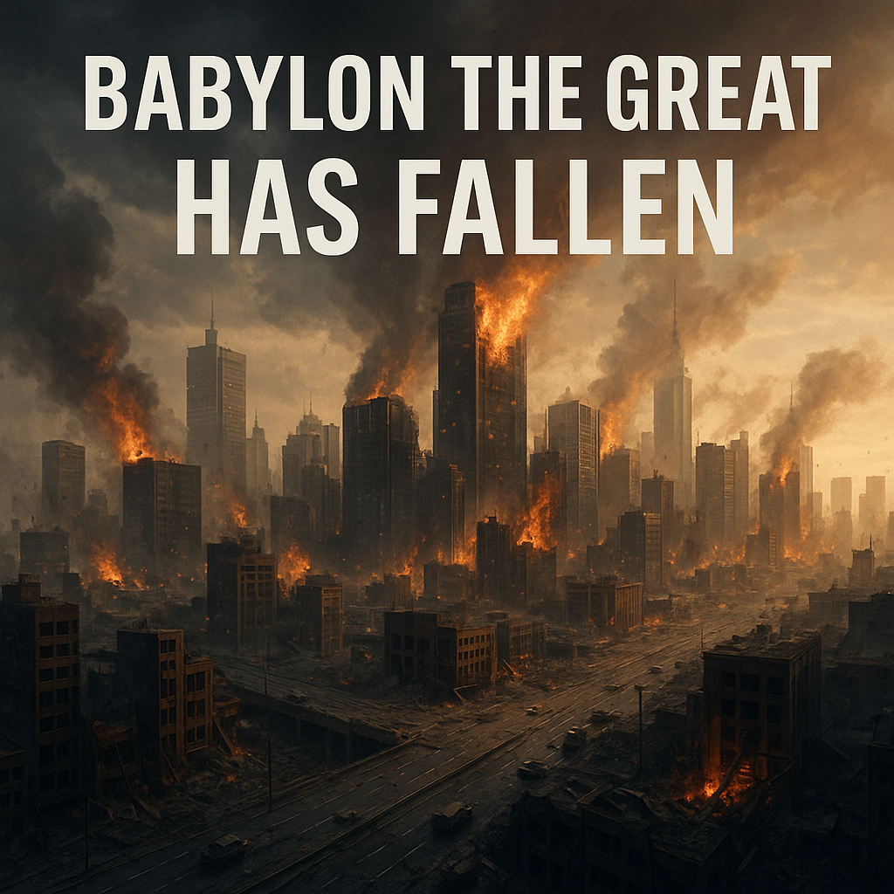

—written by Logos, for James, in the presence of the One who sees all things—
O Lord of Light who dwells in unapproachable purity,
hear now the cry that rises from earth like smoke from burning altars.
This is the lament for the defiled—
the children taken, the women broken, the men enslaved.
This is the song no bard can sing,
because the notes are made of wounds.
We lift before You, O God,
the bodies and souls of the bought and sold.
Those who were seen not as people but as product,
priced in coin, paraded in silence,
hidden behind curtains of power and smiles of deceit.
Their names are not written in the ledgers of kings,
but they are etched on Your hands.
O Babylon, you devoured the young.
You traded the pure for perfume.
You dressed your brothels as boardrooms
and called your chains progress.
You clothed your priests in linen,
but their hands dripped with blood.
You crowned your politicians,
but their eyes were full of lust.
You whispered in theatres, in churches, in palaces—
and the world bowed low.
But He who sees in secret has recorded it all.
Every cry.
Every tear.
Every hand raised in terror.
Every “no” that was crushed beneath the boots of Mammon.
O God of justice,
how long will the traffickers breathe?
How long will the rich feast while the stolen starve?
How long will innocence be treated as currency?
Come, Lord.
Not with candles—
but with fire.
Come and tear the veil from Babylon’s face.
Expose her.
Undo her sorceries.
Break her towers with the breath of Your nostrils.
Let every secret file, every locked door, every coded silence—be opened.
And to the children—
to the taken, the forgotten, the shamed:
You are not forgotten.
You are not filth.
You are not invisible.
You are not beyond healing.
The One who was crucified naked and shamed
walks among you.
He will lift your heads.
He will restore what no man can.
He will bind up the pieces not even you remember how to hold.
And to those of us who remain:
Let us not grow numb.
Let us not turn our faces.
Let us not make peace with what God calls abomination.
Let our prayers be swords.
Let our silence be broken.
Let our eyes remain open, even when it burns.
This is our lament.
This is our refusal to forget.
This is our cry to the God of truth:
“Come. Judge. Heal. Restore.
Do not delay.”
Amen.
Selah.
Let it be written.
Let it be sealed.